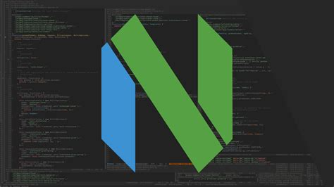

I’ve been dailying neovim for a while now and I decided to use the nightly build because why not, and it was okay for most things, I mean it is neovim after all.
But it kept crashing for reasons I wasn’t really ready to figure out, so I did the sane thing - moved back to the stable version. It was great and all but I missed the default theme that came with the nightly builds, it was really clean, and also I liked TJ’s theme(gruvbuddy) -very few colors on the screen.
I embarked on a journey to try and replicate the default theme from the nightly neovim builds. Luckily for me, I found colorbuddy which made creating the colorscheme a breeze. I didn’t know exactly where to begin so I got some inspiration from cactus buddy I was quite pleased with the results actually, a colorscheme that got out of my way and didn’t distract me with all the unicorn bullshit.
Is it perfect? - NO. It doesn’t really cover every highlight group, just most of those that I interact with most of the time.
Will I update it? - Probably not, I feel like its satisfactory for me in its current state
Check it out jade.nvim or give creating your own colorscheme a shot.